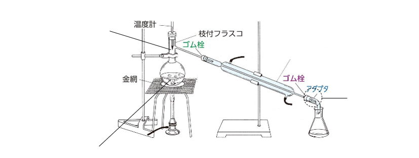

……1種類の物質だけでできているもの。純物質はとに分類される。
……2種類以上の物質が混ざり合っているもの。
| 分類 | 説明 | 例 |
|---|---|---|
| つの元素でできている物質 | 酸素 O₂、鉄 Fe | |
| 種以上の元素でできている物質 | 水 H₂O、塩化ナトリウム NaCl |
| 方法 | 説明 | 例・ポイント |
|---|---|---|
| ① | 液体中に混じっているをろ紙で分離 | 砂と水の分離。ろうとの先はビーカーのにつける |
| ② | の差を利用して液体を蒸気にし冷却して分離 | 海水から純水を取り出す（下の装置図参照） |
| ③ | 沸点の差を利用して2種以上の液体混合物を分離 | 原油から・灯油・重油などを分離 |
| ④ | 固体を加熱して直接気体にし冷やして固体を取り出す | ・ナフタレン・ドライアイス |
| ⑤ | 溶媒に対するの違いを利用して分離 | 分液漏斗を使用 |
| ⑥ | 温度によるの違いを利用して純粋な固体を取り出す | 硝酸カリウムの精製 |
| ⑦ | ろ紙などへのの強さの違いを利用して分離 | インクの色素分離 |
